Обогреватели
Комфортной считается следующая температура воздуха в помещении:
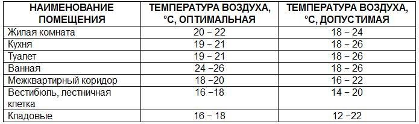Результаты многих исследований показывают, что отклонение температуры на 1–2°С вверх или вниз может существенно снизить нашу трудоспособность. Причем речь идет не только о трудоспособности, но и о здоровье. Другими словами, мы хуже выполняем свою работу, теряем способность ясно мыслить, и результаты нашего труда оказываются значительно ниже тех, на которые мы способны, работая в комфортных условиях.
Например, оптимальные условия с точки зрения чувствительности и двигательных навыков пальцев обеспечиваются при температуре воздуха 20°С. Поскольку при понижении температуры организм отдает тепло в первую очередь жизненно важным органам, то температура конечностей понижается. При 16°С температура пальцев снижается настолько, что становится трудно правильно писать. Если в помещении жарко, то способность ясно мыслить резко снижается. Так при температуре 27°С эта способность уменьшается на 30–50%.
Выбор мощности обогревателя
Мощность обогревателя для помещения с высотой потолка до 3 м выбирают из расчета 70-120 Вт на 1 кв. м. в зависимости от качества теплоизоляции здания, количества окон и наружных стен.
Для детской комнаты рекомендуется выбирать мощность обогревателя с запасом на самые крепкие морозы.
Профессиональный расчет необходимой тепловой мощности обогревателя
Формула расчета:
VxdTxK=ккал/ч, где
V - объем обогреваемого помещения (ширина х длина х высота), м3
dT - разница между температурой воздуха вне помещения и необходимой температурой внутри помещения, oC
K - коэффициент рассеивания (этот коэффициент зависит от типа конструкции и изоляции помещения)
K=3,0-4,0
Упрощенная деревянная конструкция или конструкция из гофрированного металлического листа. Без теплоизоляции.K=2,0-2,9 Упрощенная конструкция здания, одинарная кирпичная кладка, упрощенная конструкция окон и крыши. Небольшая теплоизоляция.
K=1,0-1,9
Стандартная конструкция, двойная кирпичная кладка, небольшое число окон, крыша со стандартной кровлей. Средняя теплоизоляция.K=0,6-0,9 Улучшенная конструкция, кирпичные стены с двойной теплоизоляцией, небольшое число окон со сдвоенными рамами, толстое основание пола, крыша из высококачественного теплоизоляционного материала. Высокая теплоизоляция.
1 кВт = 860ккал/ч
Термостаты в обогревателях
Термостат (терморегулятор) — прибор для поддержания постоянной температуры.
Их можно классифицировать по конструктивному исполнению:
Механические – термостаты, в которых не используются электрические части. Но подробно обсуждать эти разновидности прибора мы не будем, так как в бытовой технике, чаще используются электромеханические и электронные виды термостатов.
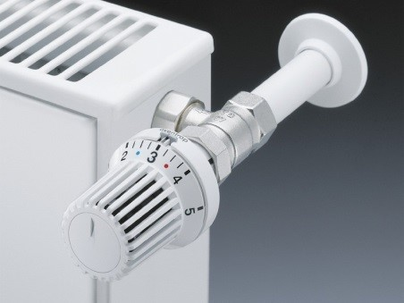Электромеханические – термостаты, в которых используются контактные пары (группы). Они так же делятся на несколько видов. Самый распространенный, где в качестве датчика температуры используется биметаллическая пластина.
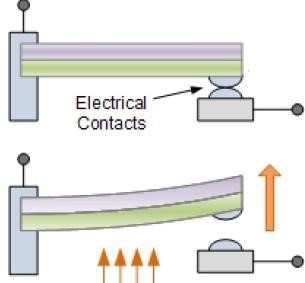Биметаллический термостат.
Биметалл - композиционный материал, состоящий из двух или более различных металлических слоев металлов или их сплавов. Из-за разницы в Коэффициентах Теплового Расширения (КТР) металлов, при нагреве, пластина изгибается в сторону металла с меньшим КТР и размыкает цепь, тем самым отключая прибор. Он долговечен, но точность его невысока 1 - 5°С.
Электронный термостат.
Принцип его работы: под воздействием температуры меняется сопротивление на термодатчике и при достижении заданной температуры поступает команда на плату управления об отключении электропитания. Датчики можно разделить на два вида:
- в которых при росте температуры, сопротивление возрастает (Позисторы),
- в которых во время роста температуры замеряемой среды, сопротивление падает, т.е. возрастает проводимость (Резисторы).
Погрешность электронного термостата составляет всего 0,1°С.
В современной технике все чаще используются электронные термостаты.
Что лучше?
Допустим, механика дает погрешность на 1°С, а электроника на 0,1°С.
Если пользователь на обогревателе задает команду прибору 24°С, то электронный термостат сработает при температуре 24,1°С, а механика отключит обогреватель уже при температуре 25°С.
На этот лишний градус прибор будет работать лишние 10-15 минут.
Аналогичный процесс происходит и при остывании обогревателя.
Уменьшение изменения температуры воздуха на 1°С обеспечивает снижение потребления электроэнергии на 5 %.
Классификация IP
Схемы методов испытаний степени защиты (IPxx) от проникновения (в соответствии со стандартом Международной электротехнической комиссии IEC 598 и Европейскими нормами EN 60598).
Защита от посторонних твердых тел, пыли
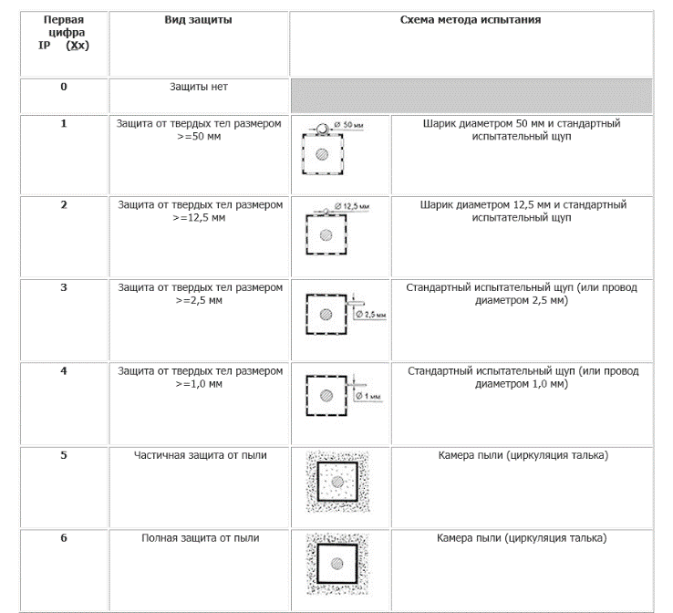Защита от воды
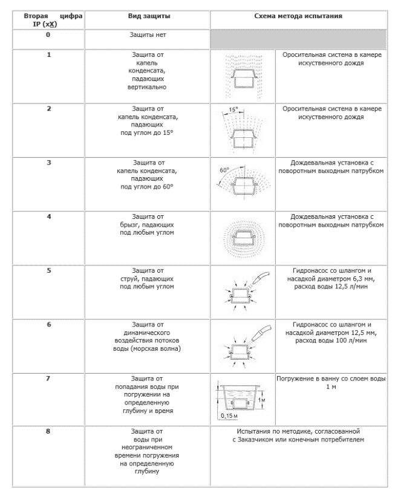Виды передачи тепловой энергии
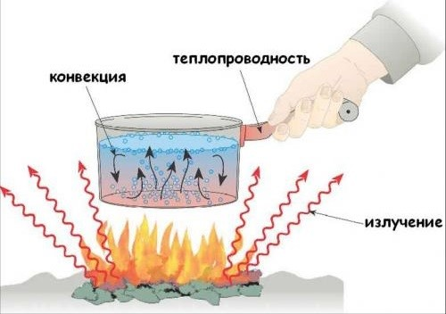Масляный радиатор состоит из герметичного корпуса, заполненного минеральным маслом, в котором расположен электронагреватель. Тепло от последнего передаётся маслу, затем корпусу, а от него — окружающему воздуху.
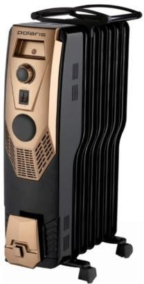Его внешняя поверхность состоит из нескольких секций (ребер) — чем больше их количество, тем обширнее теплоотдача, при равных мощностях. Обогреватель поддерживает в комнате заданную температуру и в случае перегрева автоматически выключается. Как только температура начинает падать — включается.
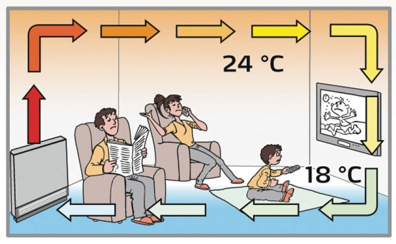Обогреватель должен быть установлен вертикально, чтобы масло при нагревании циркулировало внутри радиатора. При горизонтальном положении радиатора циркуляция масла нарушается, оно перегревается и это может привести к перегоранию ТЭНа.
Более дорогие модели радиаторных обогревателей имеют по нескольку ТЭНов, а также тепловентиляторы. ТЭНы имеют независимое включение и индивидуальные индикаторы, которые хорошо информируют человека даже в темноте: всегда видно, какой ТЭН включен.
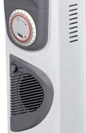Мощность, количество секций (до 14 секций) и размеры радиатора выбирают в зависимости от размеров обогреваемого помещения. При уменьшении количества секций и площади рабочей поверхности радиаторного обогревателя увеличивается температура нагрева стенок радиатора и снижается безопасность.
Чем больше ребер при той же мощности, тем ниже температура стенок радиатора. Ускорение прогрева помещения за счет повышения температуры нагрева ведет к ухудшению качества воздуха.
Применение защитного кожуха облагораживает внешний вид обогревателя, скрывая ребра радиатора. Радиаторный обогреватель становится похожим на конвектор. Кожух на радиаторе увеличивает тягу и скорость распространения теплого воздуха и, как следствие, ускоряет обогрев помещения. Наибольшая тяга у кожуха пирамидальной формы за счет сужения канала вверху
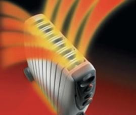Защитный кожух не снижает температуру наружных стенок, при этом масса и затраты на изготовление обогревателя увеличиваются.
Тепловентилятор — отопительный прибор конвекционного типа, обогревающий помещение за счет интенсивного непрерывного пропускания большого объёма воздуха через нагревательный элемент при помощи встроенного вентилятора.
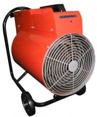Использование тепловентилятора наиболее обоснованно в помещениях, где не требуется постоянное поддержание температур, но нуждающихся в их быстром прогреве.
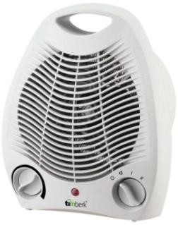Нагревательный элемент быстро достигает рабочей температуры, а принудительное нагнетание воздуха обеспечивает его более быструю циркуляцию в объёме помещения.
Тепловентилятор - бытовой обогреватель небольшой мощности, а тепловая пушка — обогреватель полупромышленного применения мощностью от 2 кВт и выше.
Типы нагревательных элементов
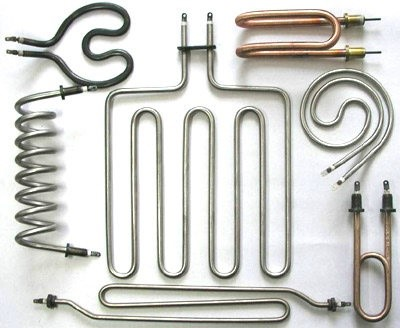В тепловентиляторе воздух нагревается от раскаленной электрической спирали, или трубчатого электронагревателя (ТЭНа), и вентилятором подается в зону обогрева. Температура открытой электрической спирали около 800°С, ТЭНа до 450°С.
ТЭН – это металлическая трубка с электрической спиралью внутри, плотно заполненная веществом с высокой теплопроводностью для повышения эффективности теплоотдачи и жесткого фиксирования тонкой спирали.
Могут изготавливаться как с электромеханическим, так и с электронным управлением.
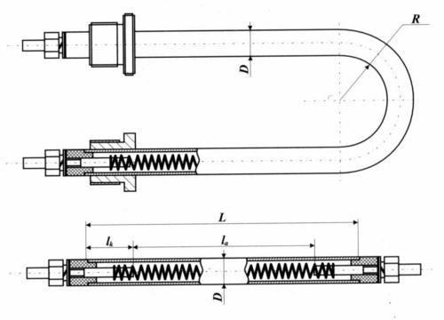Конвектор представляет собой нагревательный элемент, защищенный специальным кожухом и работающий по принципу естественной конвекции.
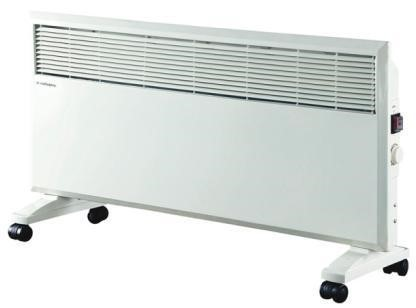Холодный воздух, находящийся в нижней части помещения, проходя через нагревательный элемент, становится теплым. Увеличиваясь в объеме, он становится легче и устремляется вверх через выходные решетки.
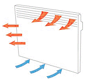Дополнительный эффект обогрева может достигаться за счет излучения тепла с лицевой поверхности панели.
От высоты защитного кожуха зависит тепловая отдача отопительного прибора. Чем выше защитный кожух, тем больше тепловая отдача конвектора.
В качестве нагревательных элементов может служить нитевидный нагревательный элемент, нагревательные элементы на основе ТЭНа.
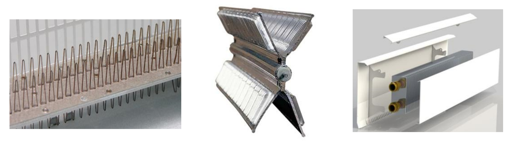Инфракрасные обогреватели

Ученые классифицировали энергию солнечного излучения с помощью такого понятия, как спектр электромагнитного излучения. Энергия распределяется по длинам волн, которые излучаются солнцем.
Спектр электромагнитного излучения
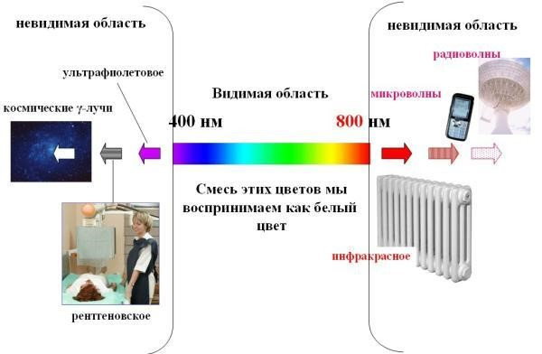У волн есть верхняя и нижняя точки, и расстояние между двумя верхними или нижними точками называется длиной волны. В зависимости от того, насколько волна длинная, определяется количество её энергии. Например, длинная волна обладает малой долей низкочастотной энергии, а короткая волна обладает большой долей высокочастотной энергии.
Мы можем видеть только те волны видимого диапазона (видимый свет), которые составляют цвета радуги. Но, несмотря на то, что наш глаз может различать только видимые волны, нас окружает большое количество других энергетических волн, по-разному влияющих на организм.
Рассмотрим электромагнитный спектр солнца, для объяснения использования каждой из его волн, при этом используя примеры из обычной жизни.
Гамма-лучи
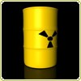Длины волн гамма-излучения (космические лучи) самые короткие в электромагнитном спектре. Они генерируются радиоактивными атомами и во время ядерного взрыва. Гамма-лучи могут убивать живые клетки.
Рентгеновские лучи
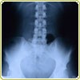Все мы знакомы с рентгеновскими лучами из посещений больницы. С помощью этих лучей доктора могут видеть внутренности нашего организма. Когда врач проводит рентгеновское обследование, лучи проходят наше тело насквозь и отпечатываются на пленке, с другой стороны. Из-за того, что наши кости более плотные, чем кожа, они оставляют изображение или силуэт на этой пленке.
Рентгеновские лучи могут быть очень вредными, и поэтому врачи защищают свинцовыми экранами области, которые не должны подвергаться обследованию.
При длительном или повторном воздействии, возможен рентгеновский ожог.
Ультрафиолетовое излучение
Ультрафиолетовое излучение — третье по уровню своей энергии в электромагнитном спектре. Это именно то излучение, из-за которого у нас появляются ожоги при длительных солнечных ваннах на пляже.
Врачи часто используют УФ волны для рентгенологического лечения, с помощью которого уничтожается множество болезнетворных организмов — от бактерий до раковых клеток. Это потенциально радиоактивные волны, которые должны использоваться с чрезвычайной осторожностью. Даже кратковременное излучение может быть вредно для человеческого организма.
Видимый свет
Это волны, видимые невооруженным глазом. Видимые длины волн это то, что мы различаем, как цвета радуги.
Цвета радуги имеют неодинаковую энергию!
Например, фиолетовый цвет имеет более короткую длину волны (немногим больше, чем ультрафиолетовый) и соответственно, обладает большей энергией, чем красный цвет, находящийся на противоположной стороне видимого спектра (ближе к инфракрасному излучению). Этот уровень энергии менее вреден для нашего организма, но при длительном воздействии это излучение может причинять вред, особенно для глаз.
Инфракрасные лучи
Инфракрасное излучение – часть спектра видимого света, которая способна нагревать в первую очередь предметы. Поскольку воздействие этих волн на прозрачные объекты минимально, воздух сильно не нагревается. Чтобы убедиться в этом, потрогайте в яркий солнечный день стекло окна, через которое светит солнце - оно остается прохладным, а предметы в комнате становятся теплыми.
Инфракрасную область спектра условно можно поделить на три части:
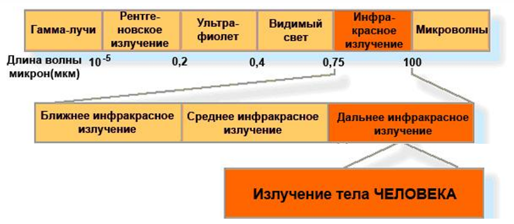- Коротковолновая 0.74 – 1.5 мкм (источник с температурой выше 700°С) излучаемые волны вишневого цвета (770°С), ярко-красные (800-900°С), желтые (выше 1000°С)
- Средневолновая 1.5 – 5.6 мкм (источник с температурой от 300 до 700°С) излучаемые волны темно-красные
- Длинноволновая 5.6 – 100 мкм (источник с температурой от 35 до 300°С) излучаемые волны темные и не светятся
Инфракрасные лучи выделяются всеми твердыми и жидкими телами, имеющими температуру выше точки абсолютного нуля (-273°С).
При этом длина излучаемой волны и интенсивность излучения зависит от температуры тела – чем она выше, тем короче волны и выше интенсивность излучения.
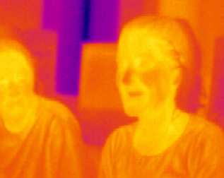Главными конструктивными элементами инфракрасного обогревателя являются излучатель, испускающий инфракрасное излучение за счёт нагрева и рефлектор.
Рефлектор (от лат. reflecto — обращаю назад, отражаю) — составная часть ряда типов антенн, радиотелескопов или источников теплового, светового, ультразвукового или любого другого излучения, с внутренней стороны имеющая отражающую поверхность, изготавливается, чаще всего, в форме параболоида или параболического цилиндра.
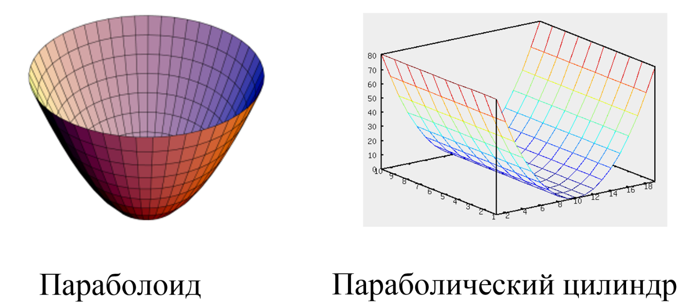Коротковолновые обогреватели
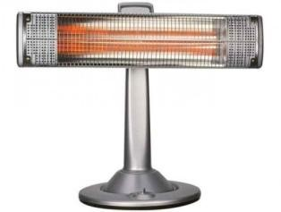Карбоновые - нагревательным элементом является углеродное волокно (карбоновая нить) в кварцевой трубке, температура нагрева до 800°С.
Кварцевые - нагревательным элементом служит вольфрамовая нить, находящаяся в стеклянной трубке, температура нагрева до 700°С.
Галогенные - нагревательный элемент – вольфрамовая нить в вакуумной лампе с инертным газом, температура нагрева до 1500°С.
При удалении от источников жесткого тепла нам будет менее горячо. Кванты ИК излучения с расстоянием не остывают, но из-за рассеивания их количество будет меньше, по этому, обжигающее действие на человека уменьшается. Однако на клеточном уровне жесткость тепла действует по-прежнему негативно.
При продолжительном коротковолновом излучении – может изменяется температура лёгких, головного мозга, почек и некоторых других органов человека.
Воздействуя на мозговую ткань, коротковолновое излучение может вызывать "солнечный удар". Человек при этом ощущает головную боль, головокружение, учащение пульса и дыхания, потемнение в глазах, нарушение координации движений, возможна потеря сознания.
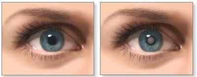Сильное инфракрасное излучение в местах высокого нагрева может вызывать опасность для глаз. Возможное последствие воздействия инфракрасного излучения на глаза - появление инфракрасной катаракты (помутнение прозрачного хрусталика).
Воздействие высокотемпературных источников на жилые помещения.
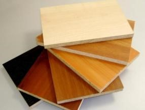МЕБЕЛЬ. Древесно-стружечная плита (ДСП) — композиционный материал, который получают путём смешивания высушенной технологической щепы с феноло-формальдегидной смолой (6—18% от массы стружек).
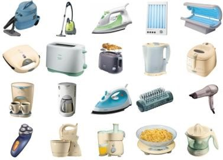БЫТОВАЯ ТЕХНИКА. ОТДЕЛОЧНЫЕ МАТЕРИАЛЫ. Пластмасса – термин широкого круга синтетических или полусинтетических материалов использующихся в изготовлении продуктов промышленного производства. В состав могут входить канцерогены от “формальдегида” до “бесфенола – А”.
Самым главным недостатком всех этих материалов, является выделение веществ, вредных и опасных для здоровья человека, которые активнее выделяются при повышении температуры.
Чем выше температура, тем активнее выделяется яд!
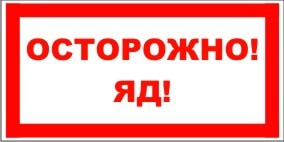Воздействие фенола
Испаряется даже при обычной температуре. Фенол в виде паров или пыли проникает в организм через дыхательные пути, слизистые оболочки и кожу. При разовом или нерегулярном воздействии небольших доз наблюдается утомление, головокружение, головная боль, а также снижение иммунитета, обострение аллергических реакций.
Воздействие формальдегида
Формальдегид — бесцветный газ с резким запахом.
Внесен в список канцерогенных веществ, обладает хронической токсичностью, негативно воздействует на генетический материал, репродуктивные органы, дыхательные пути, глаза, кожный покров.
Воздействие бисфенола-А
Используется в качестве отвердителя. С его добавлением изготавливают как оконные профили, элементы мебели, пленки для натяжных потолков, так и бутылки для воды, детские игрушки, CD и DVD и многое-многое другое.
Является наиболее общей формой в поликарбонатном пластике!
Вызывает болезни мозга, нарушает работу репродуктивной системы, вызывает онкологические заболевания, приводит к мужскому и женскому бесплодию, угнетает функции эндокринной системы, приводит к нарушению развития головного мозга у детей и развитию сердечно - сосудистых патологий.
Длинноволновые потолочные и настенные ИК – обогреватели
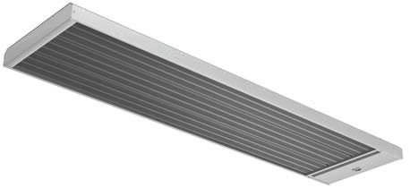СниП 2.04.05-91
Температуру поверхности приборов лучистого обогрева не следует принимать выше 250°С.
Сейчас на российском рынке есть несколько основных компаний, которые заняли данную нишу обогревателей:
Приемиум класс:
Frico (Швеция), Energotech (Швеция), Thermor (Франция) и др.
Основными отличиями данных производителей является:
- производство в Европе
- имеют широкий модельный ряд (от домашних - до промышленных)
- устанавливают на свои модели для домашнего использования только низкотемпературные ТЭНы
- класс IP для домашних моделей 24 - 54
Правда и цена существенно отличается от более низких классов.
Бюджетный класс:
ЭкоЛайн (Россия), Timberk (Китай, Россия) Noirot (Франция), Ballu (Китай, Россия) и др.
Основные отличия данных производителей заключаются в следующем:
- сборка, чаще всего, Китай или Россия. (Искл. Noirot, может быть Франция)
- температура нагр. элементов свыше 250°С (высокотемпературные тэны и всевозможные лампы), исключение ЭкоЛайн – ТЭНы до 250°С
- у многих моделей отсутствуют термостаты (правда, их можно докупить, от 400 до 2000 руб)
- класс IP 20 или IP 21
По поводу установки
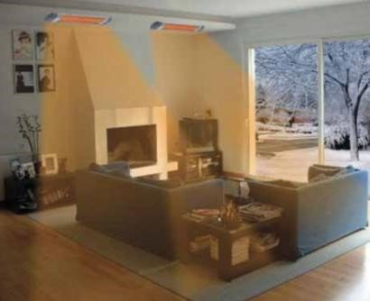- Во избежание нанесения вреда организму, при длительном использовании, минимальная высота всех длинноволновых потолочных обогревателей, мощностью выше 400Вт составляет 2 метра.
Так как данный вид обогревателей обеспечивает локальный обогрев, то на комнату 15-20 кв.м. необходимо будет установить 2 обогревателя в разных местах.
По мере увеличения мощности, высота установки возрастает.
Итог:
Инфракрасные обогреватели используются не один год, но широкого распространения по сравнению с другими устройствами, предназначенными для обогрева жилых помещений, не получили. Большинство используемых инфракрасных обогревателей используется в помещениях промышленного назначения.
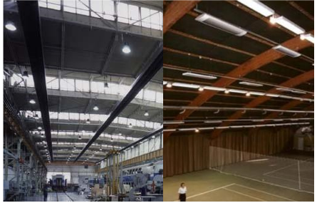Доброе тепло
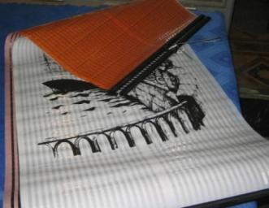Технические характеристики:
- Номинальное напряжение 220В
- Потребляемая мощность - от 100 до 520 Вт !!!
- Температура поверхности нагревателя - не более 60 oС
- Технический ресурс: 50000 Часов
- Вес не более 0,4 Кг
Как это работает?
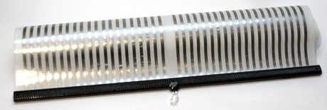Нихромовая проволока, заваренная между двумя тонкими слоями пластиковой пленки с графитовым напылением (обеспечивает необходимое сопротивление) с внутренней стороны.
В домашних условиях, при наличии материалов, изготавливается быстро и недорого.
Достоинства или недостатки…
- Не сжигают кислород. Кислород в земных условиях не горит, он расходуется. По этому, данное выражение можно отнести к любому обогревателю.
- Потребляют мало электроэнергии. При качественных расчетах отопительных приборов, для обычных жилых помещений, учитывается много факторов (от площади до типов окон). Как правило, получается примерно следующее: около 100-120 Вт на 1 кв. м. если будет использоваться, как основной и 70-100 Вт на 1 кв. м. - как дополнительный. В данном случае (доброе тепло) обогреватель будет работать эффективно только на малых площадях (4-5 кв.м.).
Для обогрева комнаты 15-20 метров необходима установка нескольких штук (что и советуют в интернет магазинах!).
- Нельзя обжечься. Температура панели – это практически, температура нагревательного элемента. Да воздух сушит меньше, но и греет хуже, чем другие обогреватели.
Заявление продавцов данных обогревателей о том, что они моментально нагревают воздух, мягко говоря, преувеличение.
- Как работает термостат? Никак, данное устройство в этих обогревателях не устанавливается. Максимум, что можно докупить, регулятор мощности и заставить работать “доброе тепло” в “пол – накала” (напр.: было 120, а станет 60 Вт!)
- Использование, как основного обогревателя зимой бессмысленно.
- Прогрев нижней части помещения возможен только в том случае, если повесить данный обогреватель у самого пола (правда, тепло от него будет чувствоваться на расстоянии 0.5 метра).
- Высокий КПД?! Известно, что холодный предмет забирает энергию у теплого (напр.: подержите в холодной руке горячую кружку с чаем, рука нагреется).
По этому, холодная стена, так же будет отбирать значительную часть тепловой энергии, которая и так поступает в комнату в небольшом количестве.
Позисторные керамические обогреватели
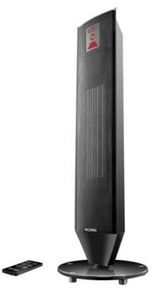Керамические обогреватели относятся к типу тепловентиляторов, так как они тоже работают по принципу принудительной конвекции. Но в техническом плане это совершенно разные аппараты. Техническое развитие не стоит на месте, требования к климатической технике с годами ужесточаются, по этому, в данных аппаратах представлены все достоинства обычных тепловентиляторов с их высоким КПД и высокой теплопроизводительностью.
В традиционных керамических (композитных) обогревателях в качестве нагревательного элемента используются керамические пластины с алюминиевыми ребрами. Для увеличения поверхности соприкосновения воздуха с нагревателем, алюминиевые ребра выполнены в виде мелких ячеек. Для поддержания заданной температуры в этих обогревателях применяют термостат.
На протяжении многих лет производители не вносили инновационных решений в модификацию приборов, а только изменяли дизайн. Последней разработкой в области теплотехники стало внедрение позисторной керамики (на основе титаната бария). Воздушный поток создается путем продувания воздуха через радиаторы, изготовленные с применением самостабилизирующихся керамических нагревательных элементов.
Принцип работы
При прохождении электрического тока позистор быстро нагревается благодаря его изначально низкому сопротивлению. Потом при достижении температуры примерно 190-200 °С, в результате резкого роста сопротивления нагрев прекращается и наступает режим саморегулирования. То есть, он автоматически поддерживает заданную температуру. Если температура окружающей среды уменьшится, то термодинамическое равновесие нарушится и позисторный нагреватель увеличит потребляемый ток, что в свою очередь увеличит мощность нагрева.
Позистор – это терморезистор с Положительным Температурным Коэффициентом. (При увеличении температуры, повышается сопротивление)
Материалом терморезисторов, с ПТК, является поликристаллический полупроводниковый титанат бария (BaTiO3). Добавляя другие материалы, например, титанат свинца или стронций, можно изменять температурный диапазон (от -100 до +250°С).
- Потребляемая мощность саморегулируется, в зависимости от температуры забираемого воздуха
- Максимальная температура поверхности нагревателя не превышает 200°С
- При приближении температуры к максимальной увеличивается сопротивление, процесс нагрева прекращается
- Повышается скорость нагрева, за счет большего выделения тепла на единицу площади
Особенности керамических позисторных
Обогревателей BORK
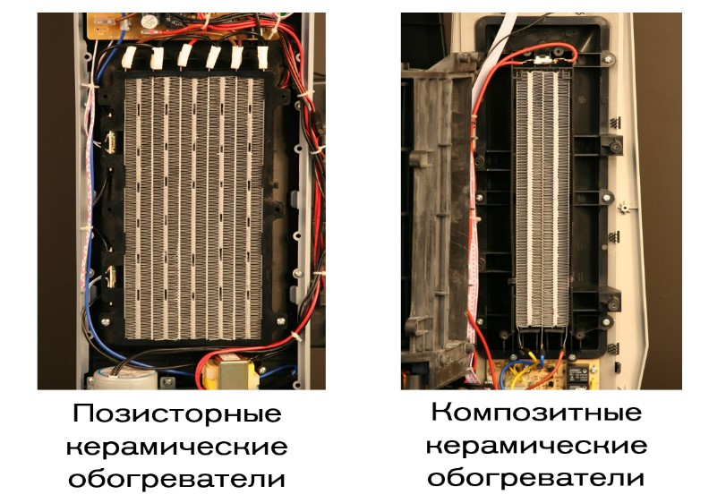Площадь поверхности нагревательного элемента в 2,5 раза больше поверхности традиционной (композитной) керамики при одинаковой мощности потребления.
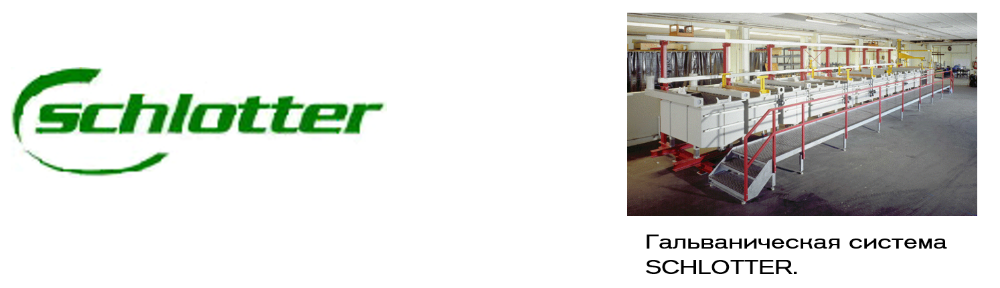Сборка на высококачественном немецком оборудовании SCHLOTTER.
- качество сборки
- специальный термостойкий пластик, исключающий деформацию и выделение пахучих соединений
- контактная группа (клеммы подсоединений)
- качество соединительных проводов
- панель сенсорного управления.
Обогреватели BORK
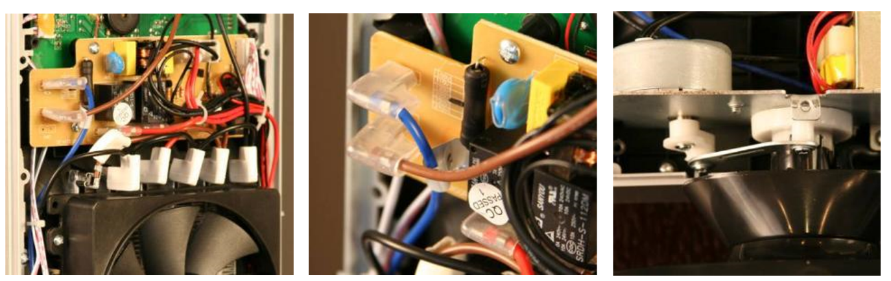Традиционная керамика
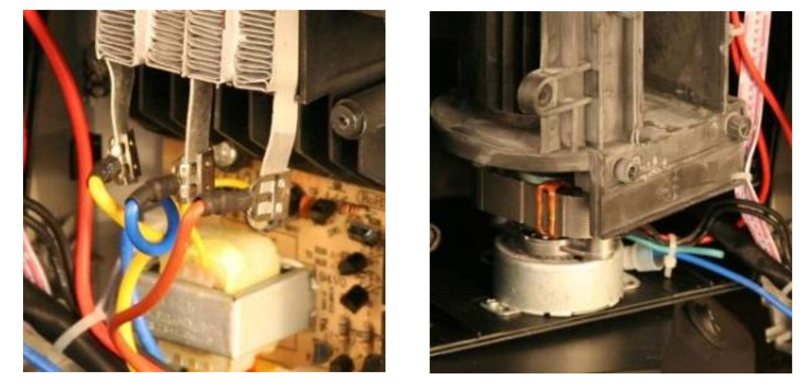Система осевых вентиляторов
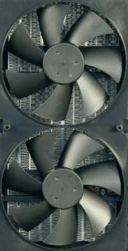Тангенциальный вентилятор
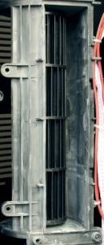Система лопастных вентиляторов, создает плотный равномерный воздушный поток, охватывающий всю площадь нагревательного элемента.
Защитная система, отключающая прибор при падении или наклоне.

Специальный механизм, отключающий прибор не чувствителен к неровностям пола, заключен внутрь корпуса прибора, поэтому не может быть механически поврежден в процессе эксплуатации.